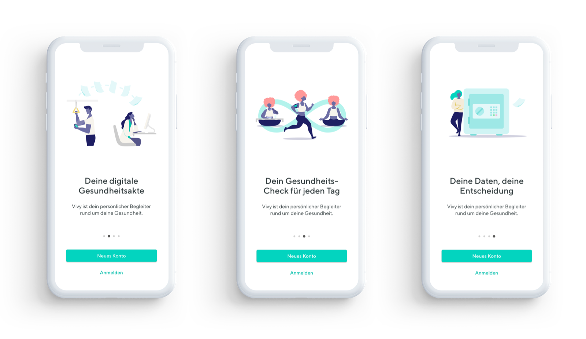
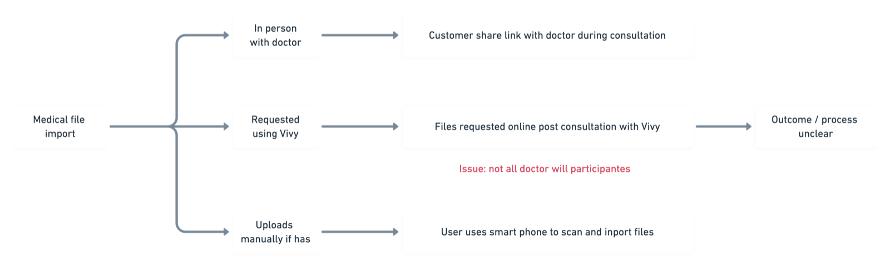
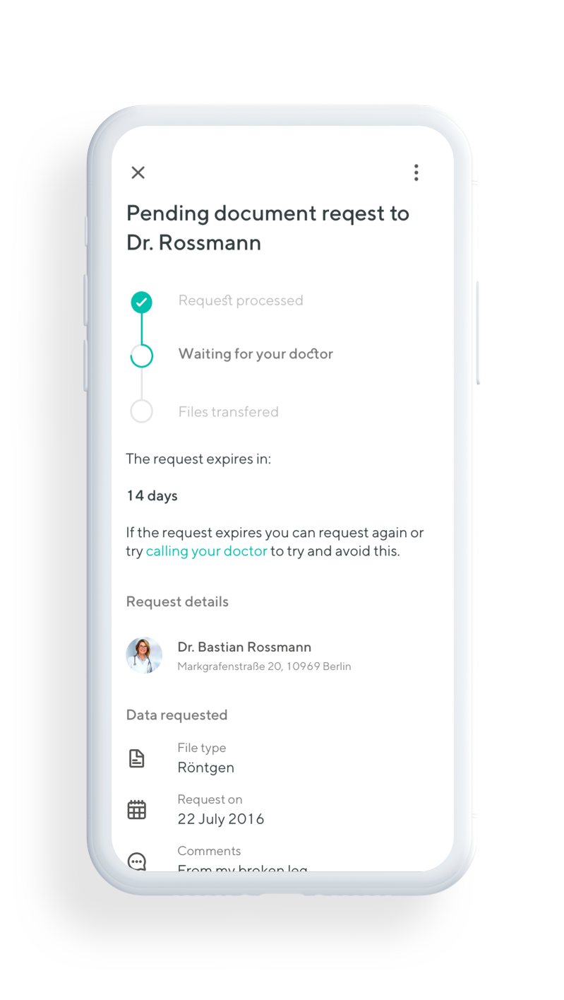
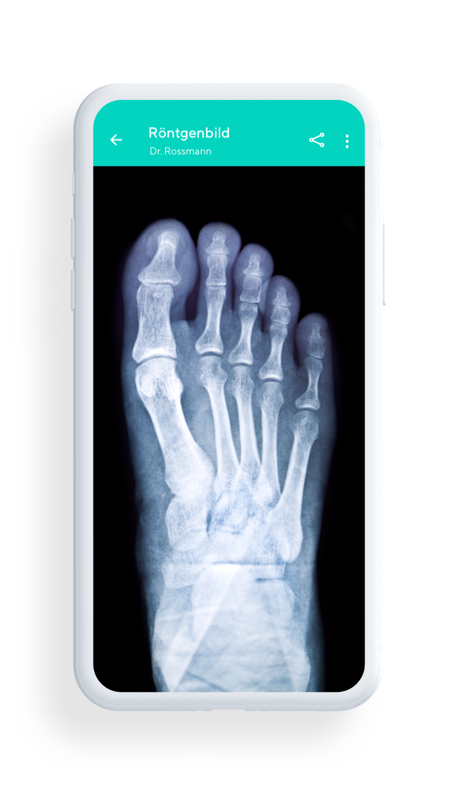
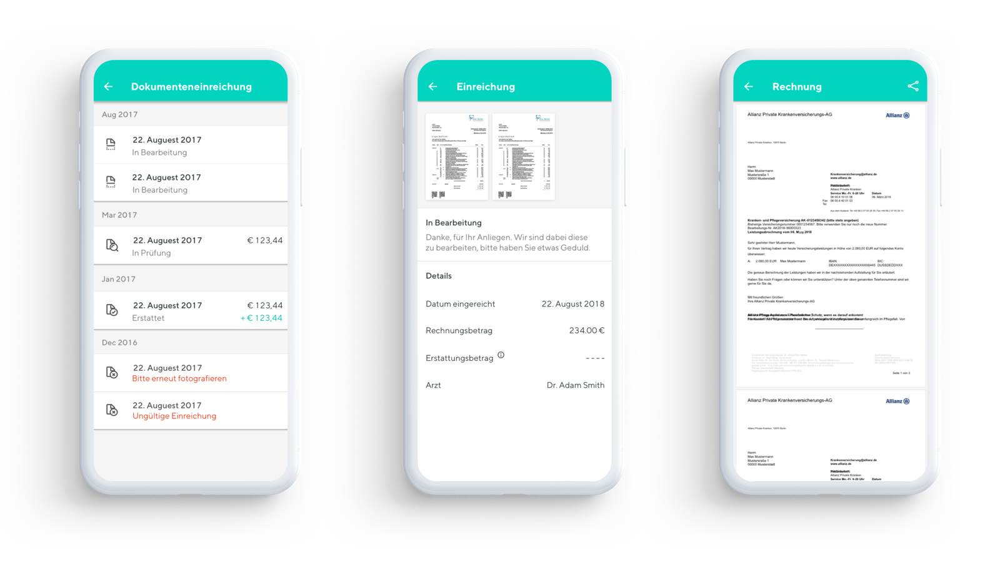
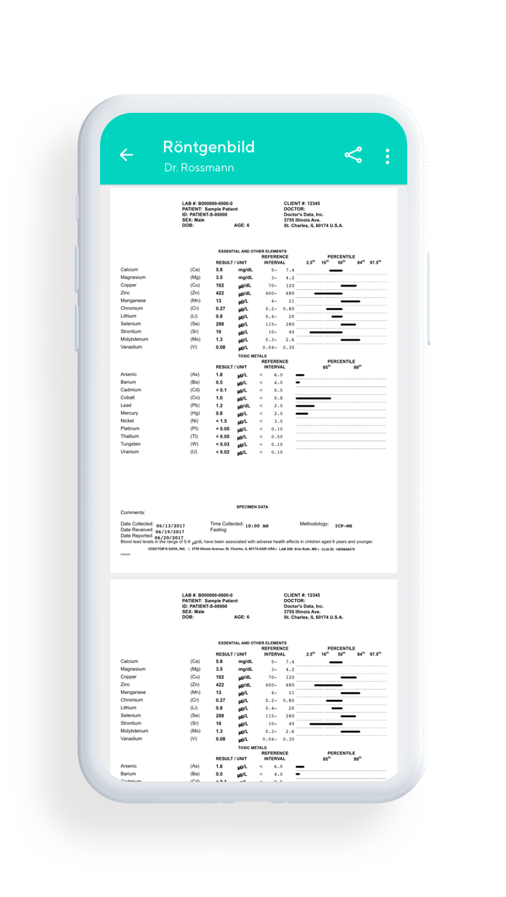

The problem
Your health records exist.
They just don't exist
anywhere useful.
In Germany, a patient's medical records are typically fragmented: lab results at one clinic, X-rays at a radiology department, prescriptions in a physical file at home. Sharing them between providers means faxes, phone calls, and trips in person — introducing delay and risk at every step.
Vivy's ambition: let patients own their complete health data on their phone, request documents digitally from any provider, and share them securely with any practitioner — without the administrative overhead.
As one of the founding designers, my role wasn't just screen-making. It was establishing the design culture from scratch: the research practices, the product principles, the way decisions got made. We were building something genuinely new in a highly regulated space — which meant doing the research carefully and being honest about what the product could and couldn't yet do.

First run — setting the tone before a single document is added
Document request & sharing
The core flow: request a
document, receive it, share it.
Encrypted throughout.
A patient opens the app, sends a request to their GP for last month's blood results, and receives them directly to their phone — no phone calls, no waiting rooms, no paper. Once there, files can be shared with any other practitioner in seconds, with access controlled entirely by the patient.

Requesting, uploading, and finding a doctor — three entry points into the same flow

An early flow map, sketching how a request could reach a doctor — and where it could quietly break down. That risk turned out to be the real story (next).
The trickiest UX challenge — expectation management
Honest design beats
optimistic design. Always.
When we launched, many document requests went unanswered — because most doctors had never heard of Vivy. The technology worked. The ecosystem wasn't ready yet. Patients felt the app was broken. The problem wasn't the product — it was that we'd set expectations we couldn't yet meet.
The solution was to design for transparency rather than optimism. Instead of hiding uncertainty behind progress spinners, I built a request status system that kept users genuinely informed — what was pending, why it might be delayed, what their options were. We added educational moments that helped patients understand the process, not just the interface.
This was one of the most important decisions I made at Vivy: trusting users with honest information rather than papering over an imperfect reality with reassuring UX patterns. Patients responded better to honesty than to false confidence.


Replacing a progress spinner with a specific status, a reason, and a next step
"Building a product that's ahead of its supporting infrastructure teaches you something most UX courses don't: how to manage the gap between vision and reality with dignity."
James Ciclitira — on VivyThe Munich sprint — invoice management
Four days with Allianz.
One major feature, defined properly.
Private healthcare in Germany carries a specific burden: patients pay out-of-pocket and file reimbursement claims with their insurer. It is a time-consuming, paper-heavy process that causes real anxiety. I travelled to Munich to run a four-day design sprint with Allianz — the goal was to understand both patient and insurer needs before building a single screen.
Day 01
Stakeholder mapping
Unpacking Allianz's internal workflows and the legal requirements for invoice processing.
Day 02
Patient pain journey
Mapping every frustration, every piece of confusion, every moment of delay in the current process.
Day 03
Rapid prototyping
Multiple invoice submission flows, tested on-the-spot with real patients and Allianz staff.
Day 04
Validation & sign-off
Working prototype. Feature requirements aligned. A shared language between design, tech, and insurer.

The invoice flow that came out of the sprint — validated with Allianz and real patients
File sharing & the practitioner interface
The patient experience only
works if doctors trust it too.
I also designed the practitioner-facing side — a secure, direct connection that made file sharing feel professional and trustworthy for both clinician and patient. The key design challenge: building enough trust signals that a doctor would be willing to integrate it into their workflow.


The patient's phone (left) and the practitioner's portal (right) — two contexts, one trust model
The Pro Portal's online check-in — patients arrive with paperwork already done, staff see who's due at a glance